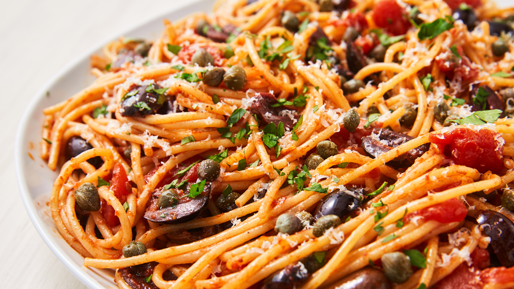

Pasta Puttanesca
Homepage

Pasta Puttanesca Recipe
Cook this classic sauce in a skillet and toss it with spaghetti for an easy weeknight dinner.
And the price is cheap, suitable for the whole family to eat together.
Ingredients
- 3 tbsp olive oil
- 1 onion, finely chopped
- 2 large garlic cloves, crushed
- ½ tsp chilli flakes (optional)
- 400g can chopped tomatoes
- 5 anchovy fillets, finely chopped
- 120g pitted black olives
- 2 tbsp capers, drained
- 300g dried spaghetti
- ½ small bunch of parsley, finely chopped
Steps
- Heat the oil in a non-stick pan over a medium-low heat. Add the onion along with a generous pinch of salt and fry for 10 mins, or until soft.
Add the garlic and chilli, if using, and cook for a further minute.
- Stir the tomatoes, anchovies, olives and capers into the onion, bring to a gentle simmer and cook, uncovered, for 15 mins. Season to taste.
- Meanwhile, bring a large pan of salted water to the boil. Cook the spaghetti following pack instructions, then drain and toss with the sauce and parsley.
Homepage